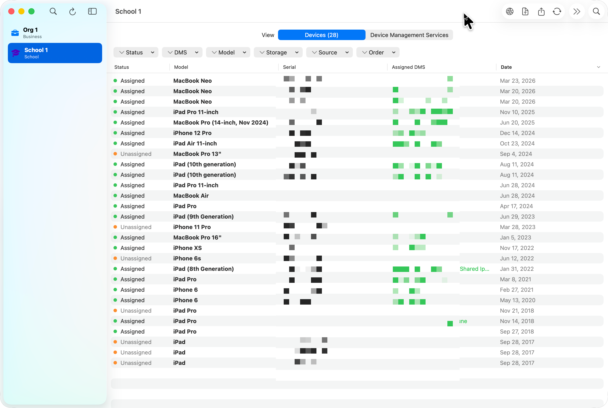

EnrollPilot is built around the workflows Apple admins actually repeat: adding organizations safely, syncing device inventory, checking DMS assignment, searching across orgs, running bulk operations, and exporting clean data.
- One Mac workspace for both ABM and ASM organizations
- Cross-portal visibility when you do not know where a device lives
- Bulk assignment and export tools that fit real admin routines
